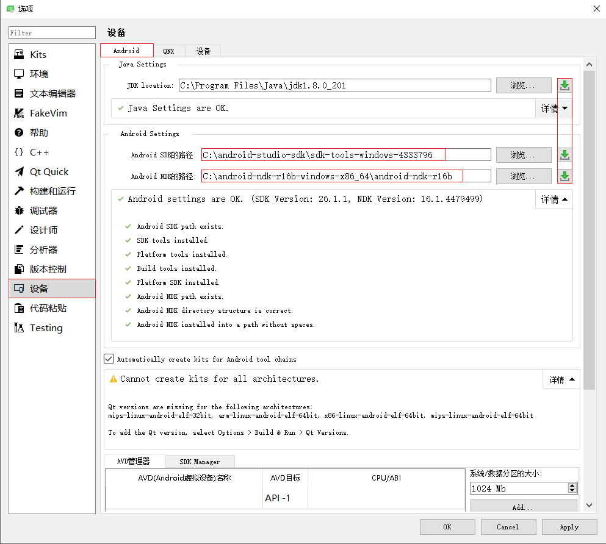

安装
安装文件：我(2019-01-25)选择了http://download.qt.io/archive/qt/5.9/5.9.7/qt-opensource-windows-x86-5.9.7.exe。
安装方式：除了Strawberry Perl 5.22.1.3，其他的全部勾选，然后安装，期间无报错，安装完毕。Qt For Android 配置
启动qtcreator.exe，然后工具>选项>设备>Android，可以看到，Qt需要JDK、Android SDK、Android NDK这3个东西。并且Qt给出了每个软件的下载地址：
JDK:http://www.oracle.com/technetwork/java/javase/downloads/index.html。
Android SDK:https://developer.android.com/studio/。
Android NDK:https://developer.android.com/ndk/downloads/。安装JDK
无脑下一步。略。安装Android SDK
简要说明：我们又不用 Android Studio 编写代码，所以下载基本的 Android 命令行工具就够用了。
下载地址：https://dl.google.com/android/repository/sdk-tools-windows-4333796.zip
安装方式：解压即可。不需要配置环境变量。我将其匹配到了目录C:\android-studio-sdk\sdk-tools-windows-4333796。
如果您不需要 Android Studio，可以从下面下载基本的 Android 命令行工具。您可以使用随附的 sdkmanager 下载其他 SDK 软件包。
sdkmanager | Android Developers。
或许我们可以执行sdkmanager "build-tools" "platform-tools" "platforms;android-28"命令。安装Android NDK
下载地址：https://dl.google.com/android/repository/android-ndk-r16b-windows-x86_64.zip。
安装方式：解压即可。不需要配置环境变量。我将其匹配到了目录C:\android-ndk-r16b-windows-x86_64\android-ndk-r16b。配置 Qt creator
